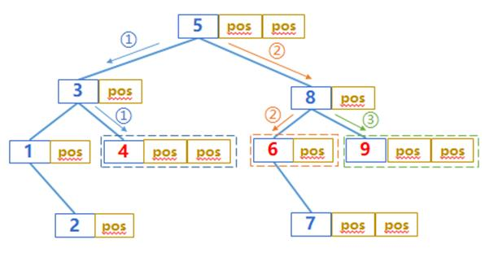

The search discussed above is mainly for a single search value. If there are multiple search values at the same time, should we simply repeat it many times?
For in-memory search, it’s OK to do this. Although some intermediate results may be reused in the two searches to reduce the amount of computation, more complex code is also required to determine which information can be reused (thus increasing the amount of computation). On the whole, better performance may not be obtained.
For external storage search, because the time to read the file is much slower compared to processing judgment, if the later search can reuse the results already read in the previous search, it is often worthwhile even if the code is complex, resulting in more judgment time. More detailed optimization methods are needed for multiple search values.
Let's examine the sorting index search of external storage. The multi-level index will form a tree structure. We assume that it is a K-ary tree (the K in SPL is 1024). Given the search value k1,..., kn, if the search starts from the root node every time, the number of index segments to be read is n*logKN times. If we cache all the index segments we have read, we can reuse these cached data and reduce the number of reads when looking for the subsequent search values.
However, when n is large, we will find that we may need to cache a lot of index segments, because we can't predict which cached index segments will be used in the future. Too much cached data will occupy a lot of memory. Sometimes, we may be forced to discard part of the cache. As a result, we may repeatedly read an index segment during subsequent searches.
This phenomenon can be avoided if k1,…,kn are sorted and then searched in turn. If the index segments read to find ki are not used when searching for ki+1, they can be discarded. These index segments will not be used again when searching for ki+2,….

When searching for 6, if the index segments read out for searching for 4 are not used
they will not be used when searching for 9
In this way, few index segments need to be cached when searching for these batch of values (there are only logKN segments at most at the same time, that is, the number from the root node to the leaf node, and there will not be too many even when N is large). It is easy to put them in memory, so as to ensure that repeated reads caused by discarding will not occur. The more search values per batch, the greater the overall advantage.
The case of binary search is similar. When there is no index, more data needs to be read, and the reuse effect of read data will be more obvious.
After finding the position of each target value using the index, we can't read the data in the original data table immediately. We have to wait to find the positions of all target values, and then sort the positions before reading the data in the original data table.
The reason is similar. The original data table is usually stored in blocks and one data block is read at a time. If two target values are in the same data block, it can be read only once. After sorting by position, it is easy to reuse the data blocks of the target values. Otherwise, the data blocks in the original data table may be read repeatedly, resulting in a waste of time.
Many performance optimizations are focused on details, and many savings together may achieve considerable performance improvement.
Such an algorithm has been built in SPL. You can directly use contain as a condition in the function. If the search value is a sequence, the icursor() function will sort it first and then execute the above method.
|
|
A |
|
1 |
=file("data.ctx").open() |
|
2 |
=10000.id(rand(1000*10000)+1) |
|
3 |
=A1.icursor(…;A2.contain(ID)).fetch() |
You can compare the time difference between performing multiple single value searches and one batch search.
In addition, even if the preloaded index of SPL is used, it is still meaningful to sort the search values for the scenario with a huge amount of data (the fourth level index segment is required). The first three levels are preloaded and will not be read repeatedly. The fourth level index segments can only be read temporarily (there are too many segments in this level). After they are used, they will be discarded to reduce the memory occupation (the first three levels already occupy a lot of memory). Repeated reads may still occur when the search values are out of order. Since the first three levels have been cached, the proportion of this time in the whole search process will be more obvious.
Multiple search values may also occur in multiple concurrent scenarios. Each task has only one search value, but hundreds or thousands of tasks may be concurrent at the same time. These tasks are independent of each other and need to be searched separately, which will also lead to a long total time. If these tasks can be aggregated and multiple values can be searched at one time, the total time will be much shorter than the sum of each search time.
It can be processed at the application level. The concurrent search values in a time interval (such as 0.5 second) can be collected, sorted, searched together, and then returned to their respective requesters. In this way, each task will wait up to 0.5 second plus batch search time, and the front-end users will not have an obvious sense of waiting. If we search separately, when the number of tasks is large, the tasks behind may have an obvious sense of waiting.
However, this mechanism should be implemented in the interface stage of the application, and the relevant examples cannot be given here.